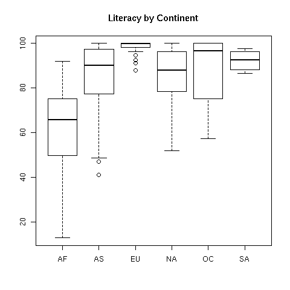
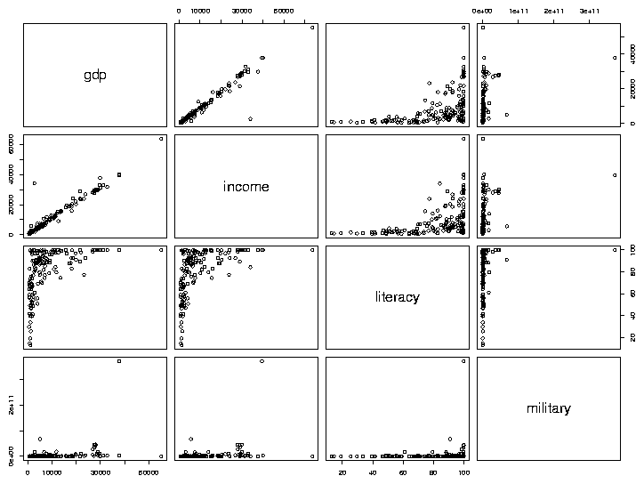
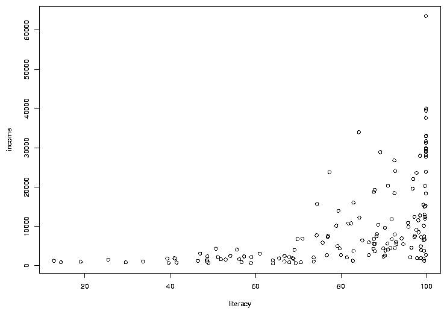
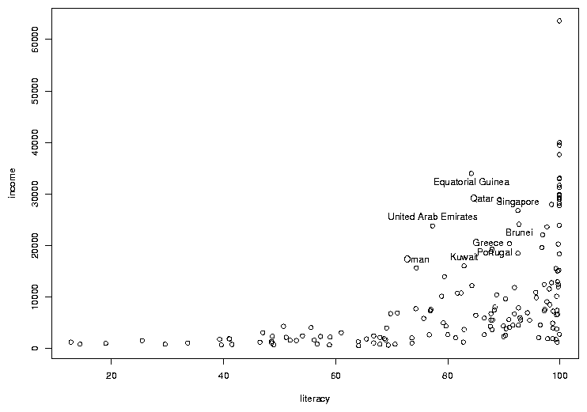
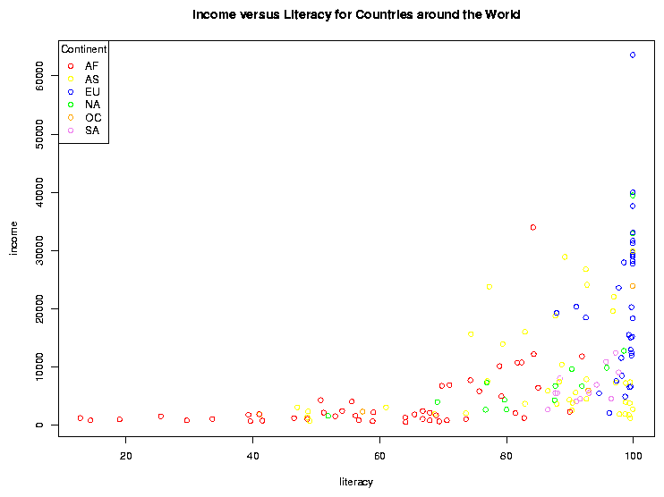

Data Frames and Plotting
1 Working with Multiple Data Frames
Suppose we want to add some additional information to our data frame, for example
the continents in which the countries can be found. Very often we have information
from different sources and it's very important to combine it correctly. The URL
http://www.stat.berkeley.edu/s133/data/conts.txt contains the information about the continents. Here are
the first few lines of that file:
country,cont
Afghanistan,AS
Albania,EU
Algeria,AF
American Samoa,OC
Andorra,EU
In R, the merge function allows you to combine two data frames
based on the value of a variable that's common to both of them. The new data
frame will have all of the variables from both of the original data frames. First,
we'll read in the continent values into a data frame called conts:
conts = read.csv('http://www.stat.berkeley.edu/classes/s133/data/conts.txt',na.string='.',stringsAsFactors=FALSE)
To merge two data frames, we simply need to tell the merge function which
variable(s) the two data frames have in common, in this case country:
world1 = merge(world,conts,by='country')
Notice that we pass the name of the variable that we want to merge by, not the
actual value of the variable itself. The first few records of the merged data
set look like this:
> head(world1)
country gdp income literacy military cont
1 Albania 4500 4937 98.7 5.6500e+07 EU
2 Algeria 5900 6799 69.8 2.4800e+09 AF
3 Angola 1900 2457 66.8 1.8358e+08 AF
4 Argentina 11200 12468 97.2 4.3000e+09 SA
5 Armenia 3900 3806 99.4 1.3500e+08 AS
6 Australia 28900 29893 99.9 1.6650e+10 OC
We've already seen how to count specific conditions, like how many countries
in our data frame are in Europe:
> sum(world1$cont == 'EU')
[1] 34
It would be tedious to have to repeat this for each of the continents. Instead,
we can use the table function:
> table(world1$cont)
AF AS EU NA OC SA
47 41 34 15 4 12
We can now examine the variables taking into account the continent that they're
in. For example, suppose we wanted to view the literacy rates of countries in
the different continents. We can produce side-by-side boxplots like this:
> boxplot(split(world1$literacy,world1$cont),main=Literacy by Continent')

Now let's concentrate on plots involving two variables. It may be surprising,
but R is smart enough to know how to "plot" a dataframe. It actually calls
the pairs function, which will produce what's called a scatterplot
matrix. This is a display with many little graphs showing the relationships
between each pair of variables in the data frame. Before we can call
plot, we need to remove the character variables (country
and cont) from the data using negative subscripts:
> plot(world1[,-c(1,6)])
The resulting plot looks like this:

As we'd expect, gdp (Gross Domestic Product) and income seem
to have a very consistent relationship. The relation between literacy
and income appears to be interesting, so we'll examine it in more
detail, by making a separate plot for it:
> with(world,plot(literacy,income))
The first variable we pass to plot (literacy in this
example) will be used for the x-axis, and the second (income) will
be used on the y-axis. The plot looks like this:

In many cases, the most interesting points on a graph are the ones that don't
follow the usual relationships. In this case, there are a few points where the
income is a bit higher than we'd expect based on the other countries, considering
the rate of literacy. To see which countries they represent, we can use the
identify function. You call identify with the same arguments
as you passed to plot; then when you click on a point on the graph
with the left mouse button, its row number will be printed on the graph. It's
usually helpful to have more than just the row number, so identify is usually
called with a labels= argument. In this case, the obvious choice is
the country name. The way to stop identifying points depends on your operating
system; on Windows, right click on the plot and choose "Stop"; on Unix/Linux
click on the plot window with the middle button. Here's the previous graph
after some of the outlier points are identified:

2 Adding Color to Plots
Color is often refered to as the third dimension of a 2-dimensional plot, because
it allows us to add extra information to an ordinary scatterplot. Consider the
graph of literacy and income. By examining boxplots, we can see that there are
differences among the distributions of income (and literacy) for the different
continents, and it would be nice to display some of that information on a
scatterplot. This is one situation where factors come in very handy. Since
factors are stored internally as numbers (starting at 1 and going up to the number
of unique levels of the factor), it's very easy to assign different observations
different colors based on the value of a factor variable.
To illustrate, let's replot the income vs. literacy graph, but this time we'll
convert the continent into a factor and use it to decide on the color of the
points that will be used for each country. First, consider the world1
data frame. In that data frame, the continent is stored in the column (variable)
called cont. We convert this variable to a factor with the factor
function. First, let's look at the mode and class of the variable before we
convert it to a factor:
> mode(world1$cont)
[1] "character"
> class(world1$cont)
[1] "character"
> world1$cont = factor(world1$cont)
In many situations, the cont variable will behave the same as it did
when it was a simple
character variable, but notice that its mode and class have changed:
> mode(world1$cont)
[1] "numeric"
> class(world1$cont)
[1] "factor"
Having made cont into a factor, we need to choose some colors to
represent the different continents. There are a few ways to tell R what
colors you want to use. The easiest is to just use a color's name. Most
colors you think of will work, but you can run the colors function
without an argument to see the official list. You can also use the method
that's commonly use by web designers, where colors are specified as a pound
sign (#) followed by 3 sets of hexadecimal digits providing the levels
of red, green and blue, respectively. Using this scheme, red is represented as
'#FF0000', green as '#00FF00', and blue as '#0000FF'. To see how many unique
values of cont there are, we can use the levels function,
since it's a factor. (For non-factors, the unique function is available,
but it may give the levels in an unexpected order.)
> levels(world1$cont)
[1] "AF" "AS" "EU" "NA" "OC" "SA"
There are six levels. The first step is to create a vector of color values:
mycolors = c('red','yellow','blue','green','orange','violet')
To make the best possible graph, you should probably be more careful
when choosing the colors, but this will serve as a simple example.
Now, when we make the scatterplot, we add an additional argument, col=,
which is a vector of the same length as the number of pairs of points that we're
plotting - the color in each position corresponds to the color that will be used
to draw that point on the graph. Probably the easiest way to do that is to use
the value of the factor cont as a subscript to the mycolors
vector that we created earlier. (If you don't see why this does what we want,
please take a look at the result of mycolors[world1$cont]).
with(world1,plot(literacy,income,col=mycolors[cont]))
There's one more detail that we need to take care of. Since we're
using color on the graph, we have to provide some way that someone viewing the
graph can tell which color represents which continent, i.e. we need to add a
legend to the graph. In R, this is done with the legend command.
There are many options to this command, but in it's simplest form we just tell
R where to put the legend, whether we should show points or lines, and what
colors they should be. A title for the legend can also be added, which is a
good idea in this example, because the meaning of the continent abbreviations
may not be immediately apparent. You can specify x- and y-coordinates for the legend
location or you can use one of several shortcuts like "topleft" to do things
automatically. (You may also want to look at the locator command,
that lets you decide where to place your legends interactively). For our
example, the following will place a legend in an appropriate place; the
title command is also used to add a title to the plot:
with(world1,legend('topleft',legend=levels(cont),col=mycolors,pch=1,title='Continent'))
title('Income versus Literacy for Countries around the World')
Notice how the title function can be used to add a title to a plot
after it's displayed if you forget to provide a main= argument to plot.
The pch= argument to the legend function is a graphics parameter
representing the plotting character. While the plot function
uses a value of pch=1 by default, the legend function won't display anything
if you don't provide a pch= argument. (You might want to experiment with different
values for the pch= argument in the plot function.)
Here's what the plot looks like:

File translated from
TEX
by
TTH,
version 3.67.
On 1 Mar 2011, 20:28.